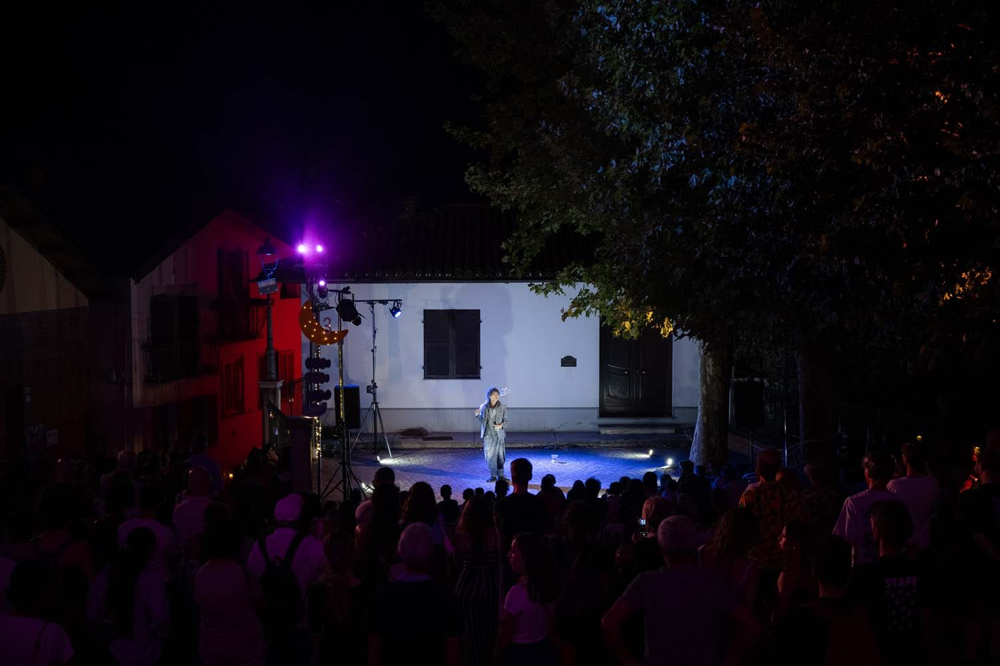

Chi siamo
Chi siamo
Dnart, il Comune e la Pro Loco di San Raffaele Cimena, dal 2022.

© Ilum collettivo · Moon Festival, 5ª edizioneDal 2022
Un’alleanza radicata nel territorio.
Il Moon Festival nasce nel 2022 dall’unione tra Dnart, il Comune e la Pro Loco di San Raffaele Cimena: un’alleanza costruita per dare vita a un progetto culturale capace di attivare comunità e generare nuove forme di socialità.
Nel tempo il festival è cresciuto grazie ad artist*, volontar*, istituzioni e cittadinanza attiva, mantenendo saldi i suoi valori: gratuità, sostenibilità, accessibilità, inclusione. Il Comune è partner strategico e imprescindibile nell’organizzazione; la Pro Loco sostiene la realizzazione con il suo radicamento locale.
 © Ilum collettivo · Moon Festival, 5ª edizione
© Ilum collettivo · Moon Festival, 5ª edizioneDnart APS
L’arte come motore di cambiamento.
Dnart è un’associazione di promozione sociale nata nel 2008. Ci occupiamo di arte, cultura e formazione, intrecciando linguaggi e persone per costruire progetti partecipativi e trasformativi.
Crediamo nel potere dell’arte come motore di cambiamento, e nel Moon Festival abbiamo trovato una forma concreta per metterlo in pratica.
 © Ilum collettivo · Moon Festival, 5ª edizione
© Ilum collettivo · Moon Festival, 5ª edizioneLe persone
Chi fa il Moon.
[DA COMPLETARE: staff, nomi e ruoli]